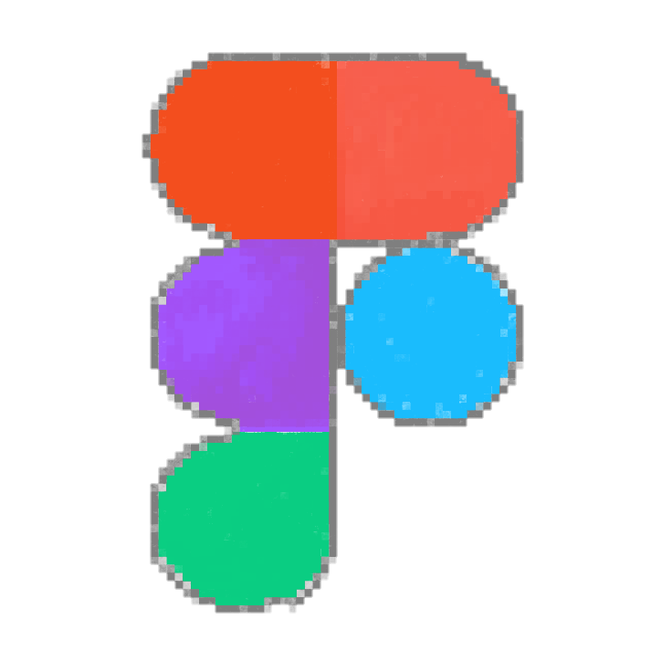
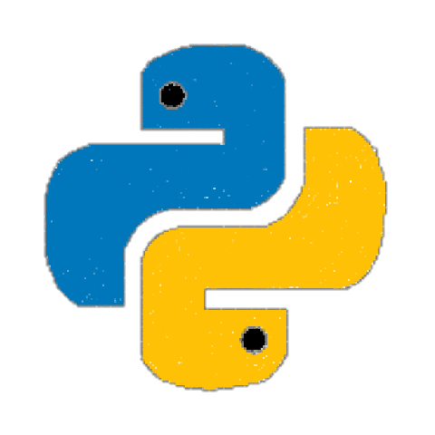
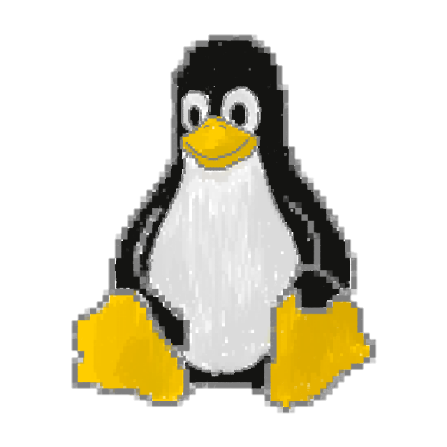
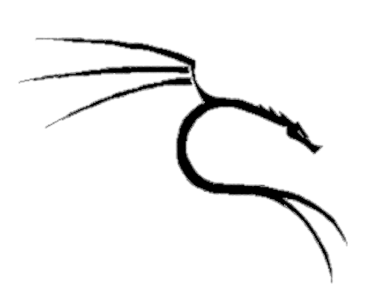
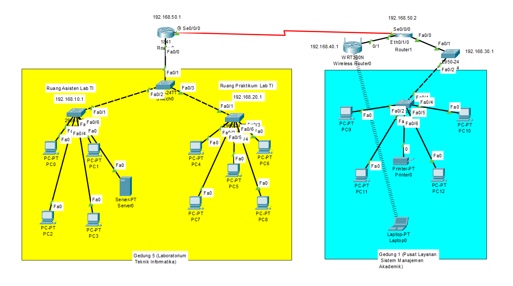
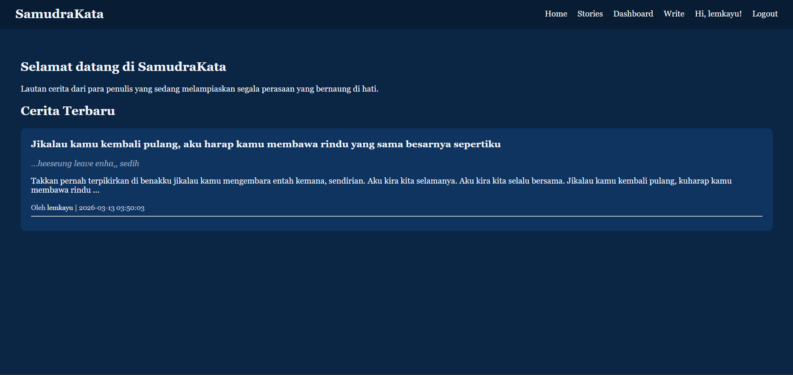
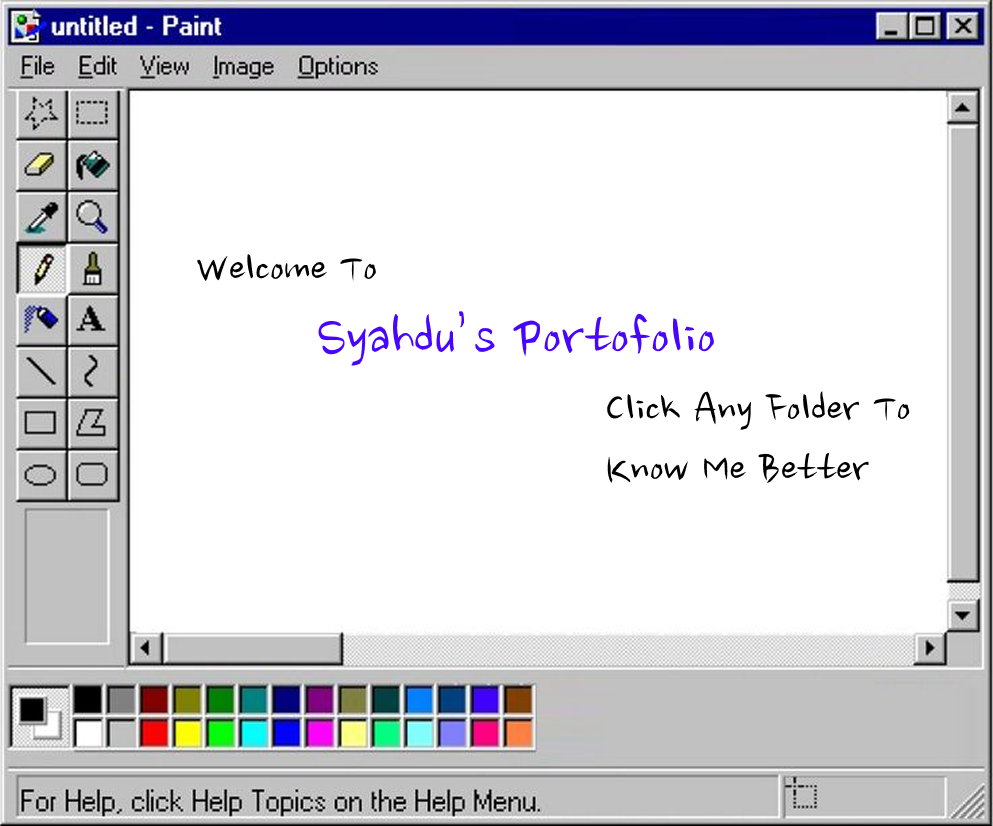
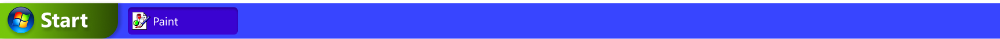

Hello! I'm Syahdu Zahara Dewo Putri, a fourth-semester student at Gunadarma University. I'm interested in UI/UX design, Cybersecurity, Networking, and Game Development. I enjoy exploring technology and building projects that help me grow both technically and creatively.
Here's the tools that i've explore:

Figma
Python
Linux
Kali LinuxHere's the projects that i've been working on:

This project simulates inter-building network in a campus using Cisco Packet Tracer.
Each building has its own subnet with different IP addresses.
Building 1 (Informatics Engineering Laboratory):
a. Lab Assistant Room: 192.168.10.0/24
b. Lab Practice Room: 192.168.20.0/24
Building 5 (Academic Management System Service Center): 192.168.50.0/24
Both buildings are connected using a main router through serial fastethernet connection.
Uses basic VLAN and IP routing to separate network traffic between departments.
This simulation helps understand how campus network is managed efficiently and securely.

(You can check this website on:
samudrakata-production.up.railway.app)
SamudraKata is a web-based storytelling platform where users can read, write, and share stories. Inspired by write.as and AO3.
Built with Flask framework for the backend and MySQL database hosted on Aiven cloud.
Features include:
- User authentication (register/login)
- Story management (create, edit, delete, publish)
- Personal dashboard for writers
- Public pages to browse published stories
Stories can be saved as draft or published for public viewing.
Each story has a unique slug for easy sharing and SEO-friendly URLs.
Deployed on Railway with database connection to Aiven MySQL cloud.
This project demonstrates full-stack development skills.

